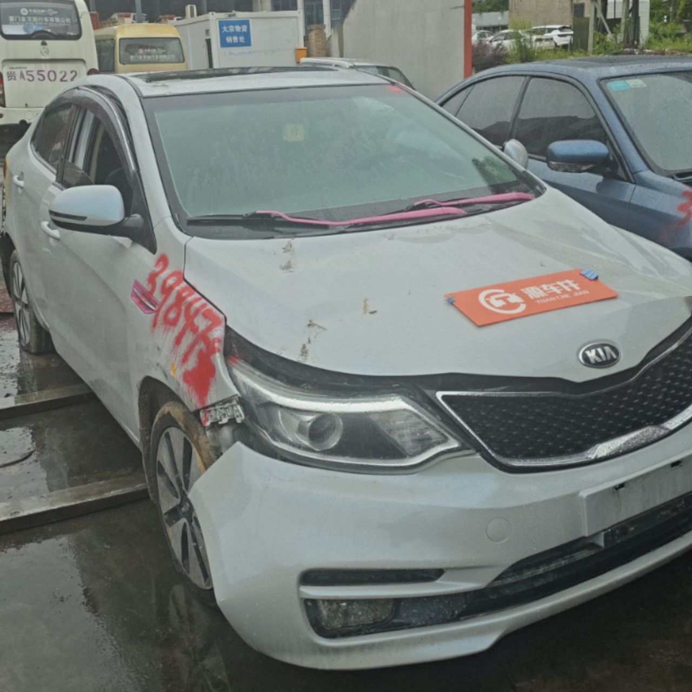
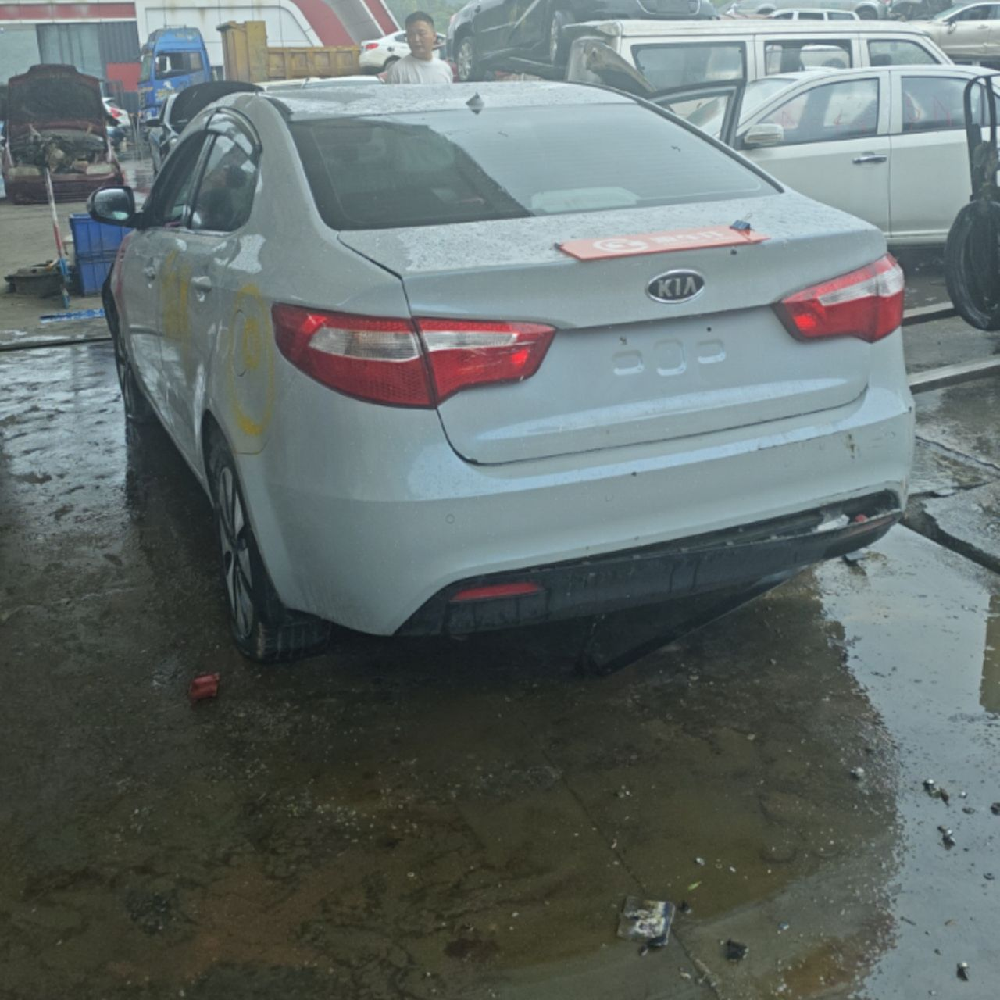
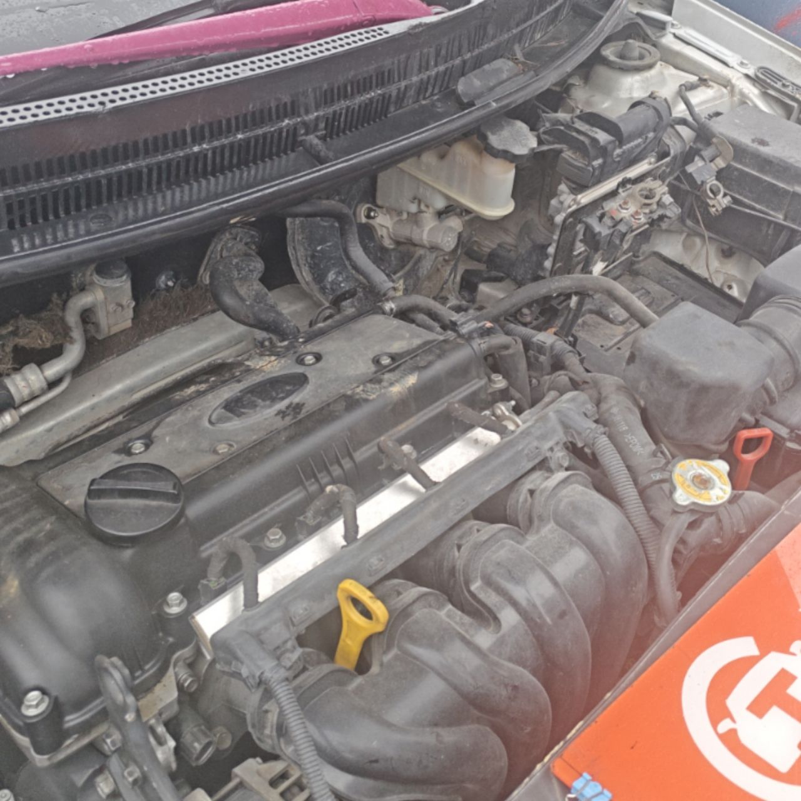
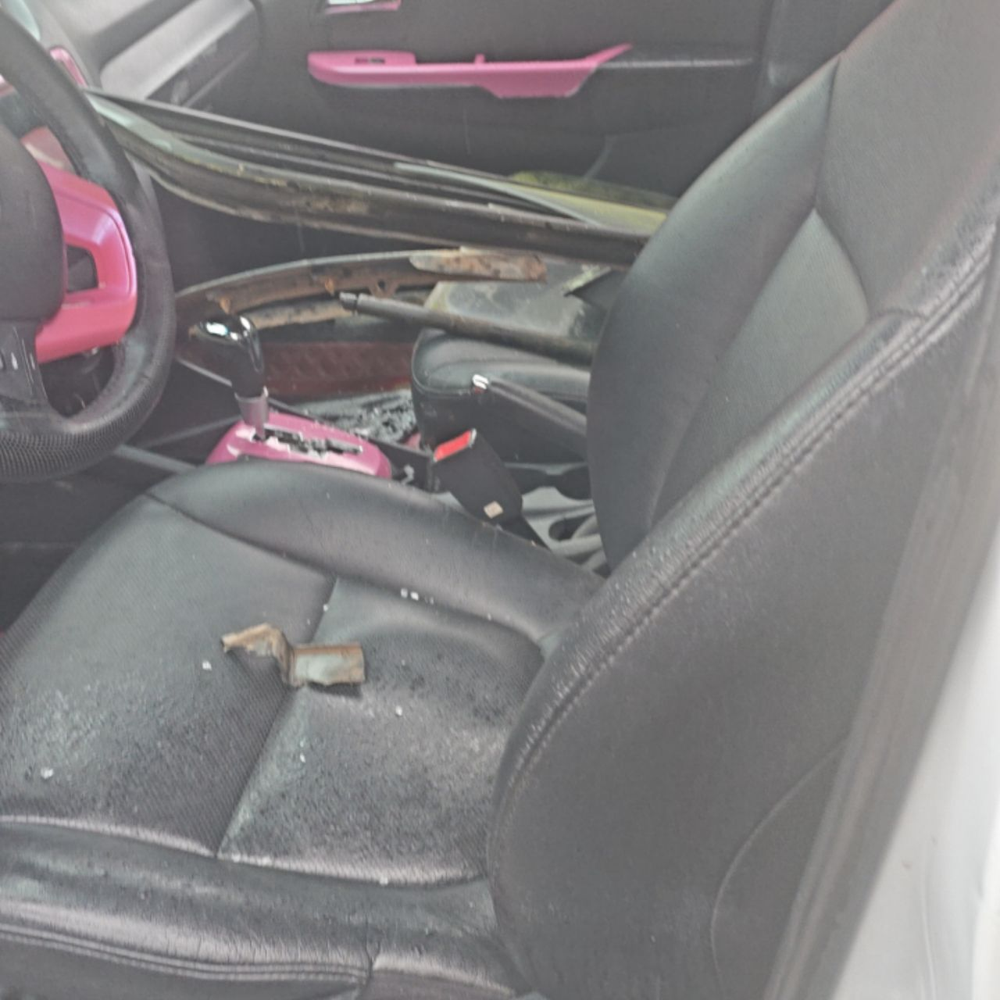
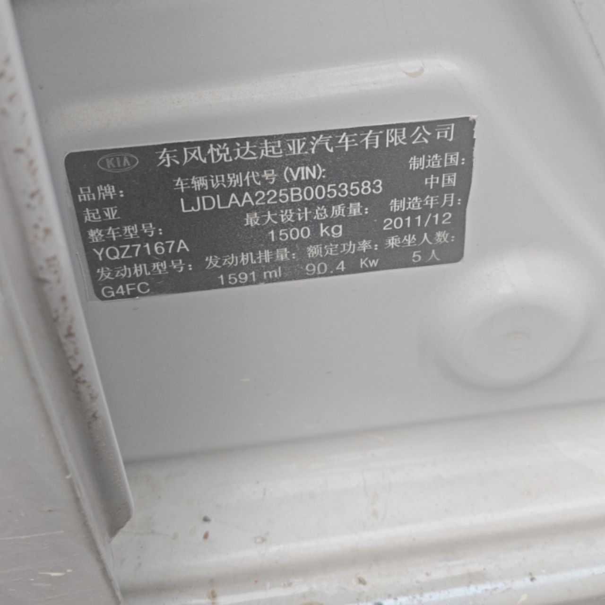

QXB0004 — Kia K2
VIN: LJDLAA225B0053583 |
Trim: 起亚 起亚K2 2011款 三厢 1.6L AT Premium |
Upload slots: 5 | Generated 2026-06-29 21:50 UTC
Front view

03_3e4a1ad82c.jpg
Rear view

04_df1a382e9c.jpg
Engine bay

09_c7d1e14a71.jpg
Interior

12_cb5e65c339.jpg
VIN / chassis plate

18_3d9c96a0cf.jpg